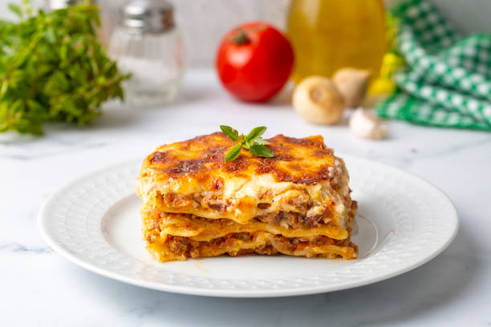

Lasagna

Description
Lasagna is a popular pasta dish from Italy. It consists of cheese, pasta, ground meat
and sauce, and is baked into a good finishing product. Recommended to eat with garlic bread or
a leafy green salad.
Ingredients
- 1/2 lbs ground beef
- Diced onion
- 1 can crushed tomatoes
- 1 can tomato sauce
- 2 tbsp chopped parsley
- 1 clove garlic
- A dash of sugar (1/8 tbsp)
- Dried basil
- Dried oregano
- Salt
- Black Pepper
- Lasagna noodles
- Ricotta cheese
- Parmesan cheese
- Shredded mozarella
- Eggs
Directions
- Cook ground beef until browned. Add in onions next, followed with canned tomato products, 1/2 of the parsley,
garlic, basil, 1.5 tsp of salt, oregano and sugar.
- Cook the pasta noodles in boiled water until al dente.
- Assemble the cheese layer by mixing ricotta, parmesan, eggs, the remaining parsley, salt and pepper.
- Assemble the lasagna and layer accordingly, starting with salt and ending with mozzarella.
- Preheat oven to 375 degrees F. Do this before placing the lasagna.
- Cover with foil and bake in oven for 1/2 an hour. Remove the foil and continue baking until the top is golden brown.
Back to Home Page